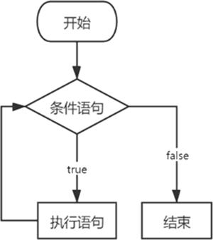

首页 > 编程笔记
Go语言for循环用法详解
Go 语言中的循环语句只支持 for 语法，不支持 while 和 do while 语法。
for 循环是对可迭代变量进行遍历输出，可迭代变量是指能执行循环输出的数据，比如切片、集合、数组、字符串或通道等数据。for语句的执行过程如下图所示。
for 循环是根据条件语句的真假来决定是否执行下一个循环，它的基本语法如下：
1) 变量初始值：一般为赋值表达式，定义变量或给变量设置初始值。
2) 判断条件：一般为关系表达式或逻辑表达式，控制是否继续执行循环，如果为 true，则继续执行下一次循环，否则终止循环。
3) 变量控制：一般为赋值表达式，对变量值执行递增或递减。
在实际应用中，for 循环的变量初始值、判断条件和变量控制都是可选设置，可根据需要灵活组合，常用的组合方式如下：
1) 组合方式一的变量 i 在 for 循环中定义并初始化，并设置了循环条件，每次循环都将变量 i 递增 1，当变量 i 等于或大于 10 的时候，程序会终止循环。
2) 组合方式二的变量 i 也是在 for 循环中定义并初始化，同时也设置了循环条件，但变量 i 的递增或递减方式是在 for 循环的执行语句中设置的，这种方式可以灵活控制变量 i 的值，从而自由变换循环次数。
3) 组合方式三只设置了循环条件，变量 i 的定义与初始化需在 for 循环之外实现，这种方式使 for 循环与循环之外的代码实现部分关联。
4) 组合方式四是不设置任何条件，for 循环等于一个死循环，它将会无止境执行循环语句，除非使用关键字 break 终止循环。
尽管 Go 语言只有 for 循环语句，但它能构建不同的组合方式，从而实现多种不同的循环方式，在开发中应结合实际需求灵活运用。
for 循环是对可迭代变量进行遍历输出，可迭代变量是指能执行循环输出的数据，比如切片、集合、数组、字符串或通道等数据。for语句的执行过程如下图所示。

图 1 for语句的执行过程
图 1 for语句的执行过程
for 循环是根据条件语句的真假来决定是否执行下一个循环，它的基本语法如下：
for 变量初始值; 判断条件; 变量控制{
执行语句
}
在 for 关键字后面分别设有变量初始值、判断条件和变量控制，三者的说明如下：1) 变量初始值：一般为赋值表达式，定义变量或给变量设置初始值。
2) 判断条件：一般为关系表达式或逻辑表达式，控制是否继续执行循环，如果为 true，则继续执行下一次循环，否则终止循环。
3) 变量控制：一般为赋值表达式，对变量值执行递增或递减。
在实际应用中，for 循环的变量初始值、判断条件和变量控制都是可选设置，可根据需要灵活组合，常用的组合方式如下：
for 变量初始值; 判断条件; 变量控制{
执行语句
}
for 变量初始值; 判断条件{
执行语句
}
for 判断条件{
执行语句
}
for {
执行语句
}
按照上述组合方式，我们通过简单的例子加以说明，代码如下：
package main
import "fmt"
func main() {
// 组合方式一
for i := 1; i < 10; i++ {
fmt.Printf("本次循环：%v\n", i)
}
// 组合方式二
for i := 1; i < 10; {
fmt.Printf("本次循环：%v\n", i)
i++
}
// 组合方式三
var i int = 1
for i < 5 {
fmt.Printf("本次循环：%v\n", i)
i++
}
// 组合方式四
for {
fmt.Printf("本次循环：%v\n", i)
break
}
}
上述 4 种组合方式有不同的应用场景，说明如下：1) 组合方式一的变量 i 在 for 循环中定义并初始化，并设置了循环条件，每次循环都将变量 i 递增 1，当变量 i 等于或大于 10 的时候，程序会终止循环。
2) 组合方式二的变量 i 也是在 for 循环中定义并初始化，同时也设置了循环条件，但变量 i 的递增或递减方式是在 for 循环的执行语句中设置的，这种方式可以灵活控制变量 i 的值，从而自由变换循环次数。
3) 组合方式三只设置了循环条件，变量 i 的定义与初始化需在 for 循环之外实现，这种方式使 for 循环与循环之外的代码实现部分关联。
4) 组合方式四是不设置任何条件，for 循环等于一个死循环，它将会无止境执行循环语句，除非使用关键字 break 终止循环。
尽管 Go 语言只有 for 循环语句，但它能构建不同的组合方式，从而实现多种不同的循环方式，在开发中应结合实际需求灵活运用。
关注公众号「站长严长生」，在手机上阅读所有教程，随时随地都能学习。内含一款搜索神器，免费下载全网书籍和视频。

微信扫码关注公众号